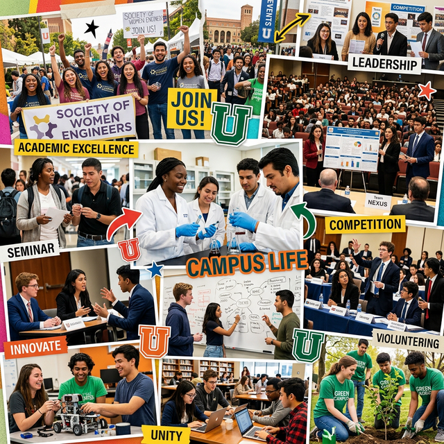

Badan Eksekutif Mahasiswa (BEM)
Organisasi intra kampus yang menjadi wadah utama pengembangan keterampilan kepemimpinan (leadership), manajemen organisasi, dan advokasi mahasiswa baik di tingkat Universitas maupun Fakultas.

UKM Olahraga
Menyediakan kegiatan olahraga profesional (Basket, Voli, Bulutangkis, Futsal, Beladiri) yang aktif berkompetisi di skala nasional dan regional.

UKM Seni & Budaya
Organisasi penyaluran bakat dibidang paduan suara, teater, kreasi tari tradisional dan modern, hingga kepiawaian dalam seni musik.

Pusat Studi & Penalaran
Wadah bagi mahasiswa penggemar debat bahasa inggris, jurnalistik, pemrograman, riset ilmiah, dan kompetisi bergengsi PKM Belmawa.

UKM Relawan & Sosial
Korp Sukarela (KSR) PMI, Resimen Mahasiswa, Pramuka, dan Pecinta Alam (MAPALA) sebagai pilar kepedulian sosial kampus.

Paduan Suara
Unit Kegiatan Mahasiswa paduan suara tingkat universitas yang aktif memeriahkan acara-acara kampus dan kejuaraan nasional.

Mahasiswa Pecinta Alam
Wadah bagi mahasiswa pehobi alam bebas, memacu adrenalin, konservasi alam, panjat tebing, dan manajemen ekspedisi.

Robotika & Inovasi TIK
Komunitas riset dan inovasi teknologi bagi mahasiswa penggiat robotik, IoT, e-sports, dan pengembangan software cipta karsa.

UKM Kerohanian
Wadah pembinaan dan kajian kerohanian bagi mahasiswa untuk membentuk karakter spiritual dan intelektual yang berakhlak mulia.

Koperasi Mahasiswa
Organisasi wirausaha kampus (KOPMA) tempat berlatih manajemen bisnis, perdagangan, akuntansi, dan pemberdayaan ekonomi mahasiswa.

Pers Mahasiswa
Lembaga independen kampus yang berfokus pada pelatihan jurnalistik, peliputan berita, dan penerbitan produk redaksi digital maupun cetak.
Penghargaan & Prestasi
Mahasiswa USM
Universitas Semarang sangat memperhatikan apresiasi dan pengembangan prestasi mahasiswa dengan memberikan beasiswa khusus, insentif, fasilitas pelatihan, dan pembimbingan terpadu kepada seluruh kontingen kompetisi kampus.
Lihat Daftar Prestasi LengkapDebat Konstitusi
Juara 1 Tingkat Nasional
POMNAS Bulutangkis
Medali Emas Antar Mahasiswa
PIMNAS DIKTI
Finalis Program Kreativitas
Delegasi Internasional
Mahasiswa Berprestasi Global